The interface, end to end#
This tutorial repeats tutorials 2 and 6 in the desktop interface: the star-forming mock spectrum with its emission lines, then the mock datacube, from its file to its maps. No code is needed. Start with the mock data and the interface:
brainsp examples
brainsp gui
A spectrum with emission lines#
Choose it
In the Spectrum workspace, step 1 Spectrum, click
mock_star_forming_lines.spec, and under Wavelength scale choose vacuum.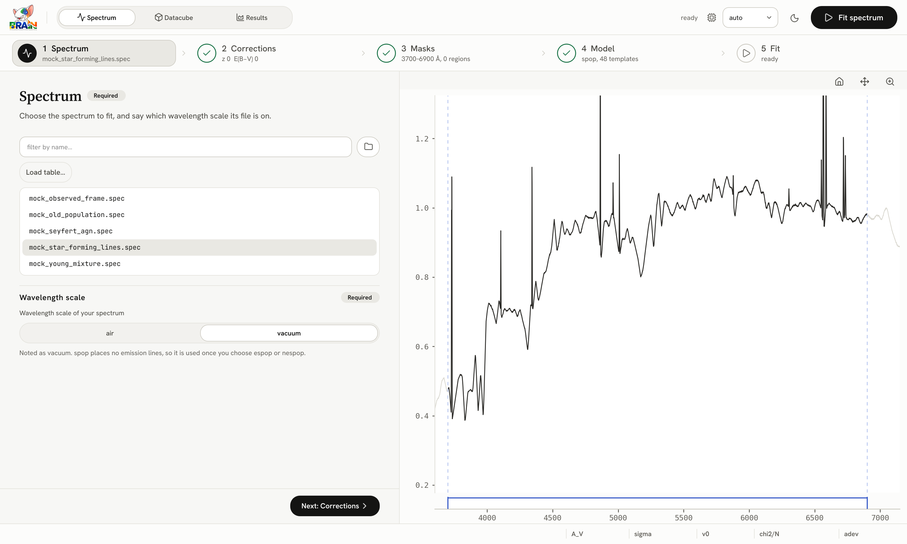
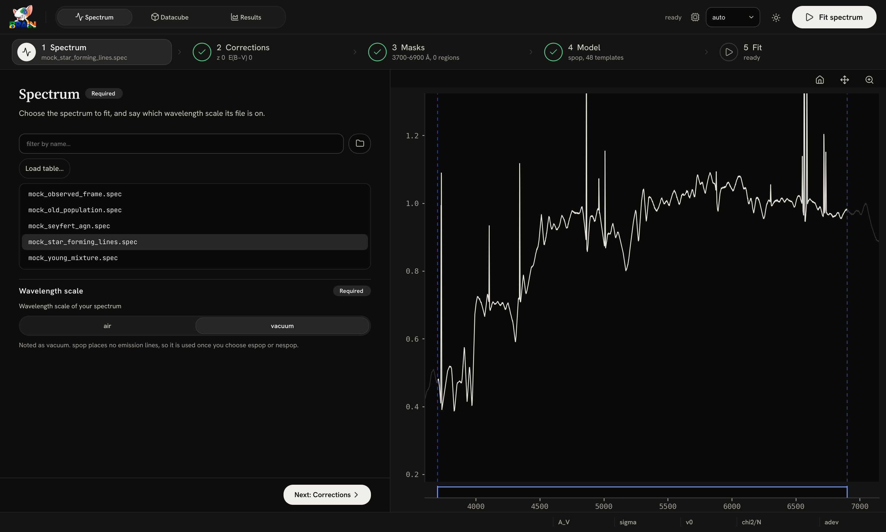
Check the corrections
Step 2 Corrections: the mock is at rest and behind no Galactic dust, so leave everything at zero.
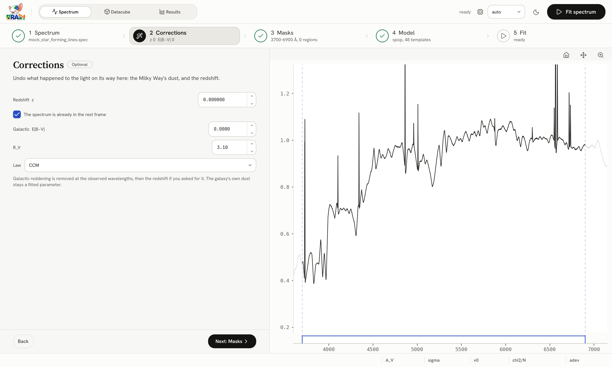
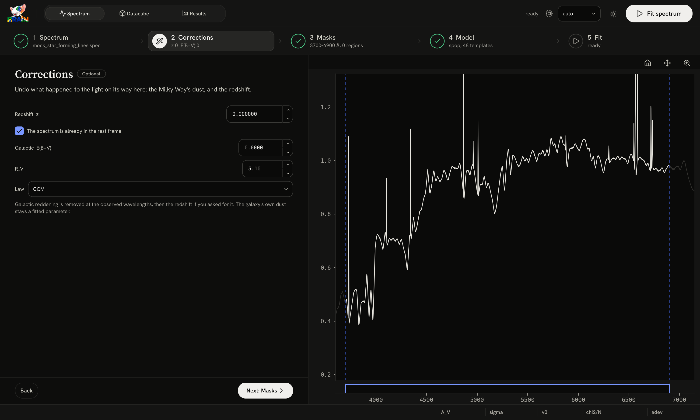
Mask nothing
Step 3 Masks: in
espopthe lines are fitted, so they must not be masked.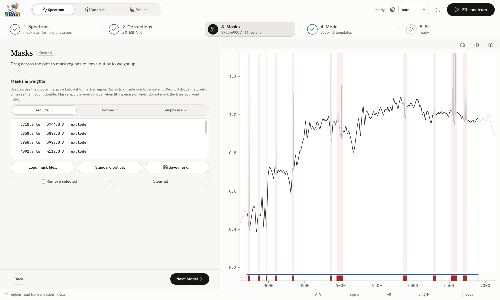
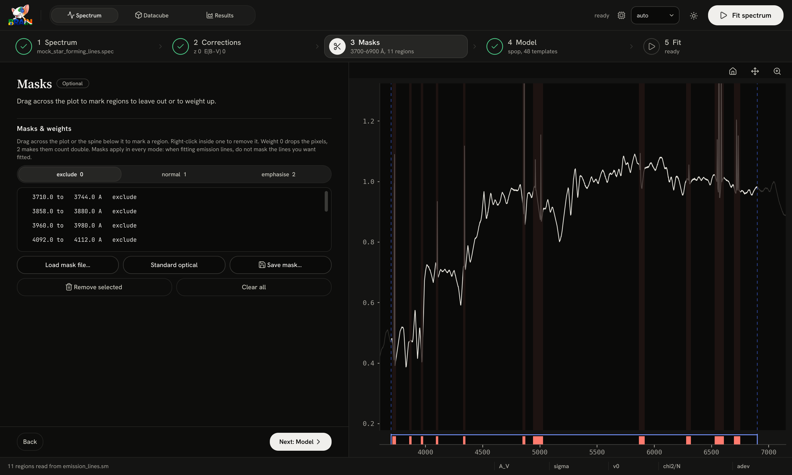
Choose espop
Step 4 Model: choose espop. It uses the wavelength scale given in step 1.
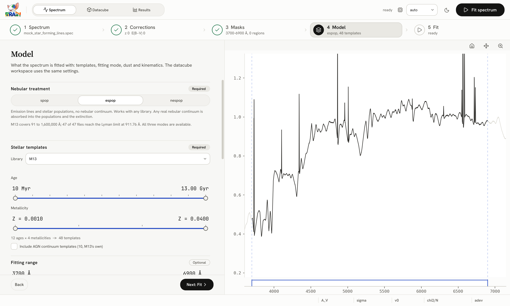
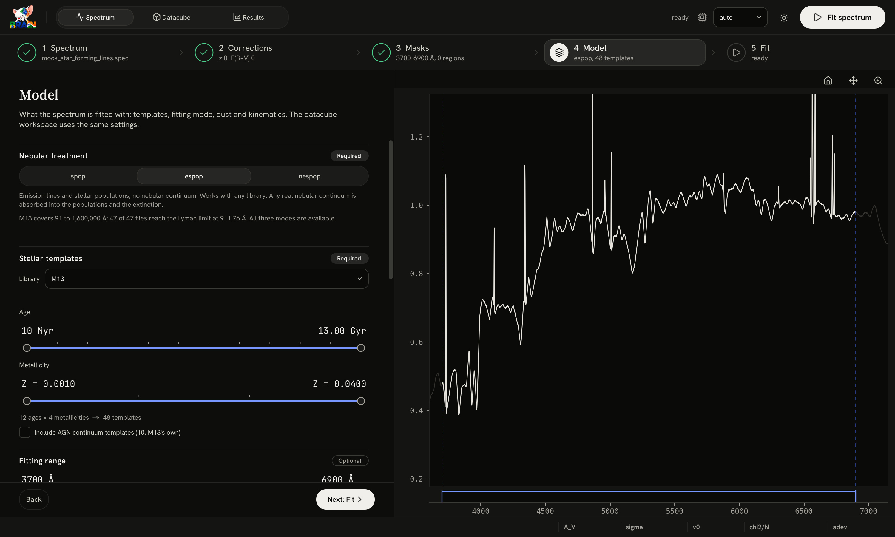
Fit
Step 5 Fit summarises the run. Press Fit spectrum.
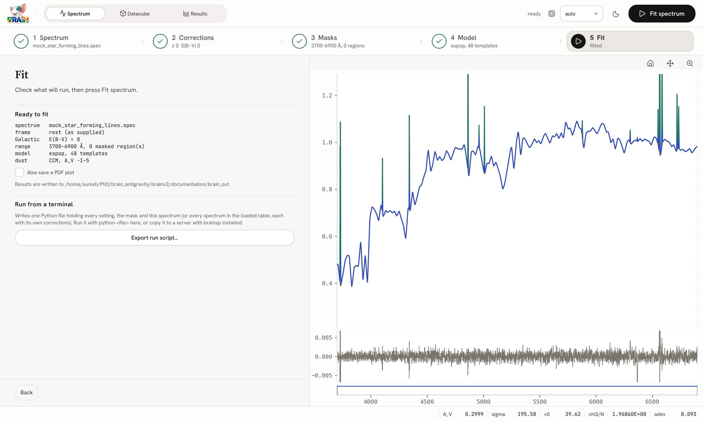

The fit appears over the spectrum: the stars in orange, the lines in green, the total in blue, the residuals below, and \(A_V\), \(\sigma\), \(v_0\), \(\chi^2/N\) and adev in the bottom bar. Your numbers are those of tutorial 2, since the interface and Python share one engine. The pictures on these pages show a showcase copy of the spectrum, made at S/N 1000 from the M13 library so that the features read clearly, so their numbers differ.


The datacube#
Open the cube
Choose the Datacube workspace and press Open datacube…; pick
examples/cube/mock_cube.fits. Under Wavelength scale, choose vacuum.

The redshift
Step 2 Corrections: type 0.02.


No preparation
Step 3 Preparation: leave every stage off.
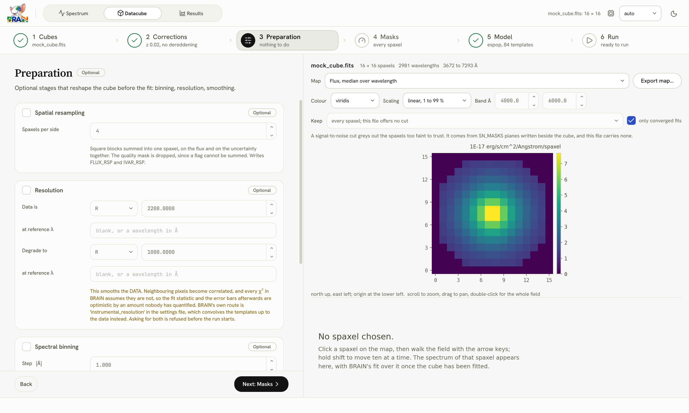
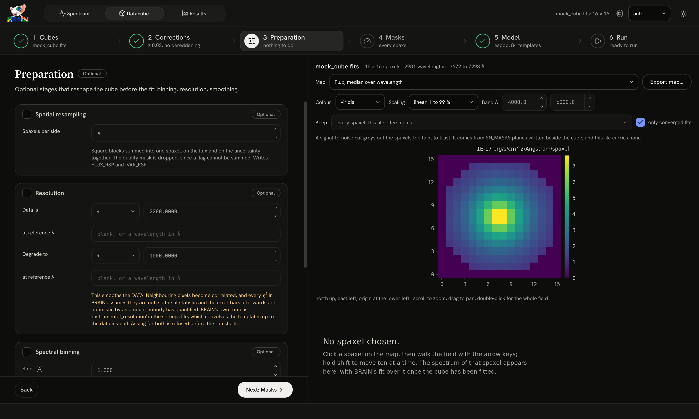
The S/N cut
Step 4 Masks: click 3. The map hatches in yellow the spaxels a cut at S/N 3 drops.


The model, and which spaxels
Step 5 Model: choose espop. In Datacube fit, Fit these spaxels reads the S/N 3 mask.
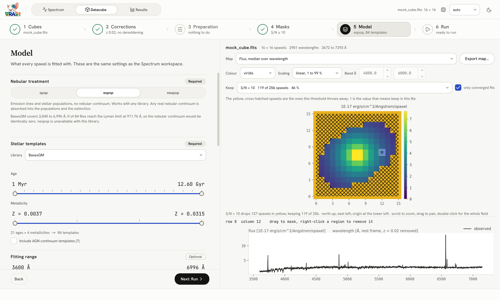
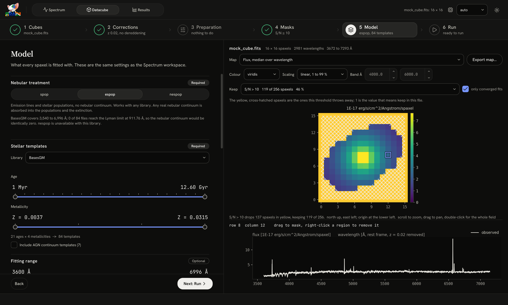
Run
Step 6 Run: press Run the pipeline. Each spaxel takes the accent colour as it is fitted.
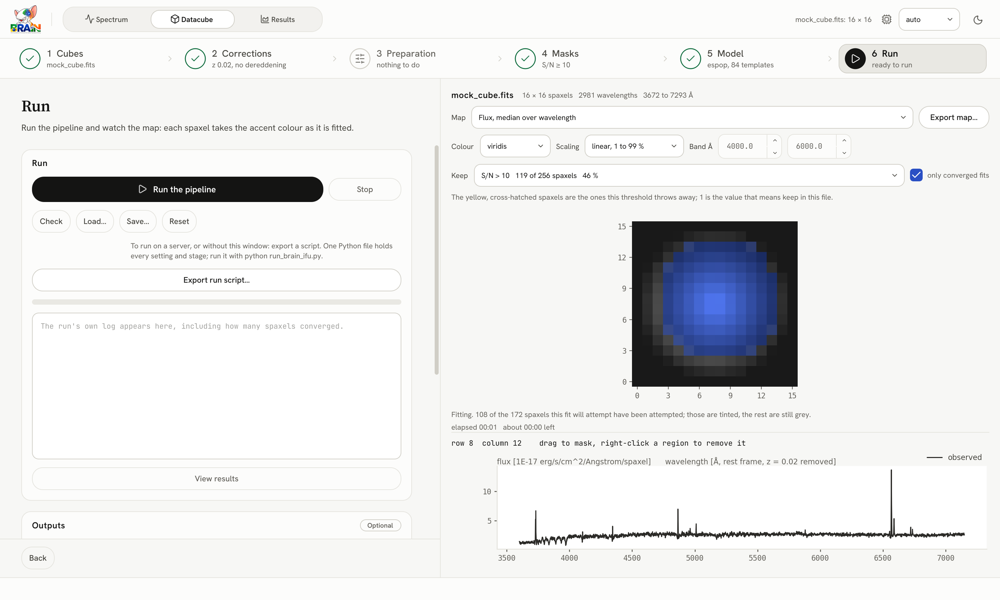
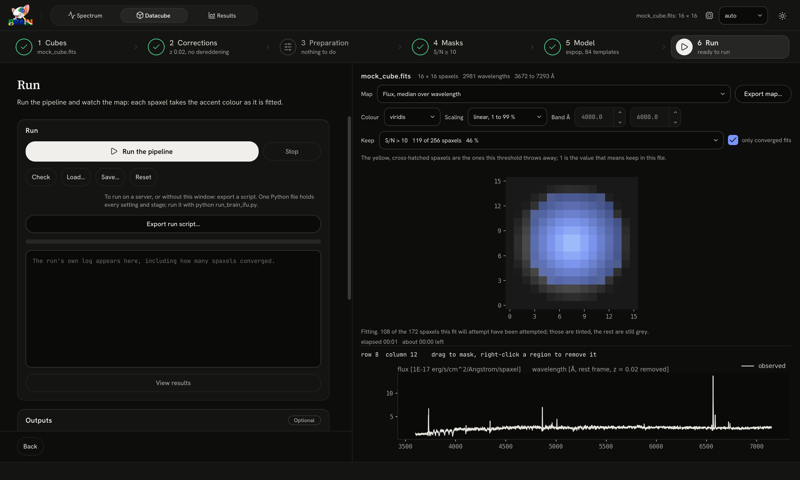
When it finishes, press View results: the Results workspace opens the megacube. Choose maps from the list, click a spaxel to see its spectrum and star formation history, and choose a diagnostic in the menu on the right.


Keep the run#
In step 6, Export run script… writes this whole run as one Python file. Saved beside the data, it repeats the fit with python run_brain_ifu.py, on this computer or a server (On a server or a cluster).